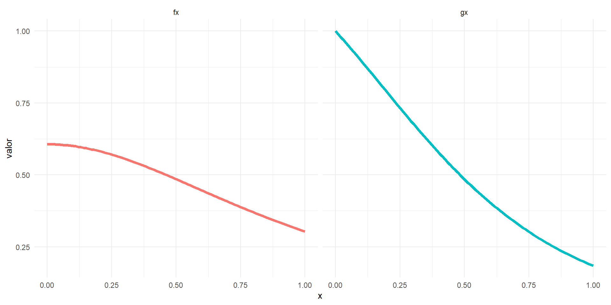

Simulación Estadística
Unidad 3: Técnicas de reducción de varianza
1 Introducción
1.1 Integración con el método de Monte Carlo
Supongamos que \(g(x)\) es una función y que queremos calcular \(\int_a^b g(x)dx\) (suponiendo que esta integral existe).
Recordemos que si \(X\) es una variable aleatoria con densidad \(f(x)\), entonces el valor esperado de la variable aleatoria \(Y = g(X)\) es
\[ \mathbb{E}[g(X)] = \int_{-\infty}^{\infty} g(x)f(x)dx.\]
Si es posible obtener una muestra aleatoria a partir de la distribución de (X), un estimador insesgado de (E[g(X)]) es la media de la muestra.
1.2 Estimador simple de Monte Carlo
Consideremos la estimación de \(\theta = \int_0^1 g(x)dx\). Si \(X_1, \ldots, X_m\) es una muestra aleatoria Uniforme(0,1), entonces
\[ \hat{\theta} = g_m(X) = \frac{1}{m} \sum_{i=1}^{m} g(X_i) \]
converge a \(E[g(X)] = \theta\) con probabilidad 1, por la Ley Fuerte de los Grandes Números. El estimador simple de Monte Carlo de \(\int_0^1 g(x)dx\) es \(g_m(X)\).
Ejemplo: Integración simple de Monte Carlo
Estimar a través de Monte Carlo la siguiente integral:
\[ \theta = \int_0^1 e^{-x} dx \]
y comparar la estimación con el valor exacto.
La estimación es \(\hat{\theta} \approx 0.631702\) y \(\theta = 1 - e^{-1} \approx 0.6321206\).
Integración con Monte Carlo, intervalo \([a, b]\)
En el caso que se necesite calcular \(\int_a^b g(t)dt\), se deberá efectuar un cambio de variables de manera que los límites de integración sean de 0 a 1. La transformación lineal es \(y = (t - a)/(b - a)\) y \(dy = (1/(b - a))dt\). Sustituyendo,
\[ \int_a^b g(t)dt = \int_0^1 g(y(b - a) + a)(b - a)dy. \]
Alternativamente, podemos reemplazar la densidad Uniforme(0,1) con cualquier otra densidad soportada en el intervalo entre los límites de integración. Por ejemplo,
\[ \int_a^b g(t)dt = (b - a) \int_a^b g(t) \frac{1}{b - a}dt \]
es \(b - a\) veces el valor esperado de \(g(Y)\), donde \(Y\) tiene la densidad uniforme en \((a, b)\). La integral es, por lo tanto, \(b - a\) veces el valor promedio de \(g(\cdot)\) sobre \((a, b)\).
Calcular una estimación de Monte Carlo de
\[\theta = \int_2^4 e^{-x} dx \]
y comparar la estimación con el valor exacto de la integral.
La estimación es \(\hat{\theta} \approx 0.1165632\) y \(\theta = e^{-2} - e^{-4} \approx 0.1170196\).
Resumiendo:
El estimador simple de Monte Carlo de la integral \(\theta = \int_a^b g(x)dx\) se calcula de la siguiente manera:
Generar \(X_1, \ldots, X_m\), iid de Uniforme\((a, b)\).
Calcular \(g(\bar{X}) = \frac{1}{m} \sum g(X_i)\).
\(\hat{\theta} = (b - a) g(\bar{X})\).
Integración de Monte Carlo, intervalo no acotado
Usaremos el método de Monte Carlo para estimar la cdf normal estándar
\[ \Phi(x) = \int_{-\infty}^x \frac{1}{\sqrt{2\pi}} e^{-t^2/2} \, dt.\]
Notar que no podemos aplicar directamente el algoritmo anterior porque los límites de integración cubren un intervalo no acotado.
Sin embargo, podemos dividir este problema en dos casos: \(x \geq 0\) y \(x < 0\), y usar la simetría de la densidad normal para manejar el segundo caso.
Entonces, el problema se traduce en estimar \(\theta = \int_0^x e^{-t^2/2} \, dt \quad \text{para} \ x > 0.\)
Lo anterior se puede efectuar generando números Uniformes\((0, x)\) aleatorios, pero significaría cambiar los parámetros de la distribución uniforme para cada valor diferente de la cdf requerida. Supongamos que preferimos un algoritmo que siempre muestree de Uniforme(0,1).
Esto se puede lograr mediante un cambio de variables. Haciendo la sustitución \(y = t/x\), tenemos \(dt = x \, dy\) y
\[\theta = \int_0^1 x e^{-(xy)^2/2} \, dy.\]
Así, \(\theta = E_Y [xe^{-(xY)^2/2}]\), donde la variable aleatoria \(Y\) tiene la distribución Uniforme(0,1).
- Generar números aleatorios iid Uniforme(0,1) \(u_1, \ldots, u_m\), y calcular
\[\hat{\theta} = g_m(u) = \frac{1}{m} \sum_{i=1}^{m} x e^{-(u_i x)^2 / 2}.\]
La media muestral \(\hat{\theta}\) converge a \(E[\hat{\theta}] = \theta\) cuando \(m \to \infty\).
Si \(x > 0\), la estimación de \(\Phi(x)\) es \(0.5 + \hat{\theta} / \sqrt{2\pi}\). Si \(x < 0\), calcular \(\Phi(x) = 1 - \Phi(-x)\).
Las estimaciones \(\hat{\theta}\) para diez valores de \(x\) se almacenan en el vector cdf. Comparar las estimaciones con el valor \(\Phi(x)\) computado (numéricamente) por la función pnorm.
Ejercicio
Notar que en el ejemplo anterior habría sido más simple generar variables aleatorias Uniforme\((0, x)\) y omitir la transformación. Esto se deja como un ejercicio.
De hecho, la integral de los ejemplos anteriores es en sí una función de densidad, y es posible generar variables aleatorias de esta densidad. Esto proporciona un enfoque más directo a la integral.
Ejemplo:
Sea \(I(\cdot)\) la función indicadora, y \(Z \sim N(0, 1)\). Entonces, para cualquier constante \(x\), tenemos \(E[I(Z \leq x)] = P(Z \leq x) = \Phi(x)\), la cdf normal estándar evaluada en \(x\).
Generar una muestra aleatoria \(z_1, \ldots, z_m\) de la distribución normal estándar. Entonces, la media muestral
\[\hat{\Phi}(x) = \frac{1}{m} \sum_{i=1}^{m} I(z_i \leq x)\]
converge con probabilidad 1 a su valor esperado \(E[I(Z \leq x)] = P(Z \leq x) = \Phi(x)\).
Ahora, las estimaciones en p para la secuencia de valores de \(x\) se pueden comparar con el resultado de la función pnorm de la cdf normal en R.
[,1] [,2] [,3] [,4] [,5] [,6] [,7] [,8] [,9] [,10]
x 0.100 0.367 0.633 0.900 1.167 1.433 1.700 1.967 2.233 2.500
p 0.525 0.633 0.734 0.815 0.876 0.922 0.955 0.975 0.987 0.992
Phi 0.540 0.643 0.737 0.816 0.878 0.924 0.955 0.975 0.987 0.994En este ejemplo, comparado con los resultados del Ejemplo anterior, parece que tenemos una mejor concordancia con pnorm en la cola superior, pero peor concordancia cerca del centro.
En resumen:
Si \(f(x)\) es una función de densidad de probabilidad soportada en un conjunto \(A\) (es decir, \(f(x) \geq 0\) para todo \(x \in \mathbb{R}\) y \(\int_A f(x) = 1\)), para estimar la integral
\[\theta = \int_A g(x)f(x)dx,\]
Se debe generar una muestra aleatoria \(x_1, \ldots, x_m\) de la distribución \(f(x)\), y calcular la media muestral
\[\hat{\theta} = \frac{1}{m} \sum_{i=1}^{m} g(x_i).\]
Entonces, con probabilidad uno, \(\hat{\theta}\) converge a \(E[\hat{\theta}] = \theta\) cuando \(m \to \infty\).
1.3 El error estándar de la estimación
El error estándar de \(\hat{\theta} = \frac{1}{m} \sum_{i=1}^{m} g(x_i)\):
La varianza de \(\hat{\theta}\) es \(\sigma^2 / m\), donde \(\sigma^2 = Var_f(g(X))\).
Cuando la distribución de \(X\) es desconocida, sustituimos \(F_X\) por la distribución empírica \(F_m\) de la muestra \(x_1, \ldots, x_m\).
La varianza de \(\hat{\theta}\) puede estimarse por
\[\frac{\hat{\sigma}^2}{m} = \frac{1}{m^2} \sum_{i=1}^{m} [g(x_i) - \bar{g}(x)]^2. \qquad(1)\]
Notar que
\[\frac{1}{m} \sum_{i=1}^{m} [g(x_i) - \bar{g}(x)]^2\]
es el estimador plug-in de \(Var(g(X))\). Es decir, la Ecuación 1 es la varianza de \(U\), donde \(U\) está uniformemente distribuido en el conjunto de repeticiones \(\{g(x_i)\}\).
La estimación correspondiente del error estándar de \(\hat{\theta}\) es
\[\hat{s}_e(\hat{\theta}) = \frac{\hat{\sigma}}{\sqrt{m}} = \frac{1}{m} \left\{ \sum_{i=1}^{m} [g(x_i) - \bar{g}(x)]^2 \right\}^{1/2}.\]
El Teorema Central del Límite implica que
\[\frac{\hat{\theta} - E[\hat{\theta}]}{\sqrt{Var \hat{\theta}}}\]
converge en distribución a \(N(0, 1)\) cuando \(m \to \infty\). Por lo tanto, si \(m\) es suficientemente grande, \(\hat{\theta}\) es aproximadamente normal con media \(\theta\).
La distribución normal de una gran muestra de \(\hat{\theta}\) puede aplicarse para poner límites de confianza o límites de error en la estimación de Monte Carlo de la integral, y verificar la convergencia.
Ejemplo: Límites de error para la integración de MC
Estimar la varianza del estimador en el Ejemplo anterior, y construir intervalos de confianza aproximados del 95% para la estimación de \(\Phi(2)\) y \(\Phi(2.5)\).
[1] 9.805000e-01 1.911975e-06[1] 0.9777898 0.9832102La probabilidad \(P(I(Z < x) = 1)\) es \(\Phi(2) \approx 0.981\). Aquí \(g(X)\) tiene la distribución de la proporción muestral de 1’s en \(m = 10000\) ensayos de Bernoulli con \(p \approx 0.981\), y la varianza de \(g(X)\) es, por lo tanto, \((0.981)(1 - 0.981)/10000 = 1.8639\times 10^{-6}\). La estimación de MC \(1.911975\times 10^{-6}\) de la varianza es bastante cercana a este valor.
Para \(x = 2.5\), el resultado es
[1] 9.93800e-01 6.16156e-07[1] 0.9922615 0.9953385La probabilidad \(P(I(Z < x) = 1)\) es \(\Phi(2.5) \approx 0.994\). La estimación de Monte Carlo \(6.16156\times 10^{-7}\) de la varianza es aproximadamente igual al valor teórico \((0.994)(1 - 0.994)/10000 = 5.964\times 10^{-7}\).
1.4 Varianza y Eficiencia
El método de Monte Carlo para estimar la integral \(\int_a^b g(x)dx\) consiste en representar la integral como el valor esperado de una función de una variable aleatoria uniforme. Es decir, si \(X \sim \text{Uniforme}(a, b)\), entonces \(f(x) = \frac{1}{b - a}\), \(a < x < b\), y
\[\theta = \int_a^b g(x)dx = (b - a) \int_a^b g(x) \frac{1}{b - a}dx = (b - a) E[g(X)].\]
Recordemos:
El estimador de Monte Carlo de media muestral de la integral \(\theta\) se calcula de la siguiente manera:
Generar \(X_1, \ldots, X_m\), iid de Uniforme\((a, b)\).
Calcular \(g(\bar{X}) = \frac{1}{m} \sum g(X_i)\).
\(\hat{\theta} = (b - a) g(\bar{X})\).
La media muestral \(g(\bar{X})\) tiene un valor esperado \(g(\bar{X}) = \theta / (b - a)\), y
\[\text{Var}(g(\bar{X})) = \frac{1}{m} \text{Var}(g(X)).\]
Por lo tanto, \(E[\hat{\theta}] = \theta\) y
\[\text{Var}(\hat{\theta}) = (b - a)^2 \text{Var}(g(\bar{X})) = \frac{(b - a)^2}{m} \text{Var}(g(X)). \qquad(2)\]
Según el Teorema Central del Límite, para \(m\) grande, \(g(\bar{X})\) es aproximadamente normalmente distribuido, y por lo tanto \(\hat{\theta}\) es aproximadamente normalmente distribuido con media \(\theta\) y varianza dada por la Ecuación 2.
El enfoque de “acierto-o-fallo” para la integración de Monte Carlo también utiliza una media muestral para estimar la integral, pero la media muestral se toma sobre una muestra diferente y, por lo tanto, este estimador tiene una varianza diferente a la de la fórmula de la Ecuación 2.
Supongamos que \(f(x)\) es la densidad de una variable aleatoria \(X\). El enfoque de “acierto-o-fallo” para estimar \(F(x) = \int_{-\infty}^x f(t)dt\) es el siguiente:
Generar una muestra aleatoria \(X_1, \ldots, X_m\) de la distribución de \(X\).
Para cada observación \(X_i\), calcular
\[g(X_i) = I(X_i \leq x) = \begin{cases} 1, & X_i \leq x; \\ 0, & X_i > x. \end{cases}\]
- Calcular \(\hat{F}(x) = g(\bar{X}) = \frac{1}{m} \sum_{i=1}^{m} I(X_i \leq x)\).
Notar que la variable aleatoria \(Y = g(X)\) tiene la distribución Binomial(1, \(p\)), donde la probabilidad de éxito es \(p = P(X \leq x) = F(x)\).
La muestra transformada \(Y_1, \ldots, Y_m\) son los resultados de \(m\) ensayos de Bernoulli independientes e idénticamente distribuidos.
El estimador \(\hat{F}(x)\) es la proporción muestral \(\hat{p} = y/m\), donde \(y\) es el número total de éxitos observados en \(m\) ensayos.
Por lo tanto, \(E[\hat{F}(x)] = p = F(x)\) y \(\text{Var}(\hat{F}(x)) = p(1 - p)/m = F(x)(1 - F(x))/m\).
La varianza de \(\hat{F}(x)\) puede estimarse por \(\hat{p}(1 - \hat{p})/m = \hat{F}(x)(1 - \hat{F}(x))/m\).
La varianza máxima ocurre cuando \(F(x) = 1/2\), por lo que una estimación conservadora de la varianza de \(\hat{F}(x)\) es \(1/(4m)\).
1.5 Eficiencia
- Si \(\hat{\theta}_1\) y \(\hat{\theta}_2\) son dos estimadores para \(\theta\), entonces \(\hat{\theta}_1\) es más eficiente (en un sentido estadístico) que \(\hat{\theta}_2\) si
\[\frac{\text{Var}(\hat{\theta}_1)}{\text{Var}(\hat{\theta}_2)} < 1.\]
Si las varianzas de los estimadores \(\hat{\theta}_i\) son desconocidas, podemos estimar la eficiencia sustituyendo una estimación muestral de la varianza para cada estimador.
Notar que la varianza siempre puede reducirse aumentando el número de réplicas, por lo que la eficiencia computacional también es relevante.
2 Reducción de varianza
En un escenario típico para un estudio de simulación, estamos interesados en determinar \(\theta\), un parámetro posiblemente conectado con algún modelo estocástico.
Si \(\hat{\theta}_1\) y \(\hat{\theta}_2\) son estimadores del parámetro \(\theta\), y \(\text{Var}(\hat{\theta}_2) < \text{Var}(\hat{\theta}_1)\), entonces el porcentaje de reducción de la varianza logrado al usar \(\hat{\theta}_2\) en lugar de \(\hat{\theta}_1\) es
\[ 100 \left( \frac{\text{Var}(\hat{\theta}_1) - \text{Var}(\hat{\theta}_2)}{\text{Var}(\hat{\theta}_1)} \right). \]
Ahora, de manera más general, mediante la integración a través del método de Monte Carlo, pudimos observar que dicho método servía para estimar funciones del tipo \(\mathbb{E}[g(X)]\).
El enfoque de Monte Carlo para estimar \(\theta = E[g(X)]\) consiste en calcular la media muestral \(g(\bar{X})\) para un gran número \(m\) de repeticiones de la distribución de \(g(X)\). La función \(g(\cdot)\) suele ser un estadístico; es decir, una función \(n\)-variada de \(g(X_1, \ldots, X_n)\) de una muestra. Cuando \(g(X)\) se usa en ese contexto, se tiene \(g(\mathcal{X}) = g(X_1, \ldots, X_n)\), donde \(\mathcal{X}\) denota los mismos elementos. Por simplicidad usamos \(g(X)\).
Sean:
\[X^{(j)} = \{X_1^{(j)}, \ldots, X_n^{(j)}\}, \quad j = 1, \ldots, m\]
iid provenientes desde la distribución de \(X\), y calculamos las repeticiones correspondientes al experimento
\[ Y_j = g(X_1^{(j)}, \ldots, X_n^{(j)}), \quad j = 1, \ldots, m. \qquad(3)\]
Entonces \(Y_1, \ldots, Y_m\) son independientes e idénticamente distribuidos con la distribución de \(Y = g(\mathcal{X})\), y
\[E[\bar{Y}] = E \left[ \frac{1}{m} \sum_{j=1}^{m} Y_j \right] = \theta.\]
Así, el estimador de Monte Carlo \(\hat{\theta} = \bar{Y}\) es insesgado para \(\theta = E[Y]\). La varianza del estimador de Monte Carlo es
\[\text{Var}(\hat{\theta}) = \text{Var}(\bar{Y}) = \frac{\text{Var}_f(g(X))}{m}.\]
El incremento del número de repeticiones \(m\) reduce la varianza del estimador de Monte Carlo.
Sin embargo, se necesita un gran aumento en \(m\) para obtener incluso una pequeña mejora en el error estándar.
Para reducir el error estándar de 0.01 a 0.0001, necesitaríamos aproximadamente 10000 veces el número de repeticiones.
En general, si el error estándar debe ser como máximo \(e\) y \(\text{Var}_f(g(X)) = \sigma^2\), entonces \(m \geq [\sigma^2 / e^2]\) repeticiones son necesarias.
Así, aunque la varianza siempre se puede reducir aumentando el número de repeticiones de Monte Carlo, el costo computacional es alto.
Otros métodos para reducir la varianza se pueden aplicar y son menos costosos computacionalmente que simplemente aumentar el número de repeticiones.
En esta unidad revisaremos algunos métodos para reducir la varianza del estimador de la media muestral obtenido por simulación \(\bar{X}\) de \(\theta = E[g(X)]\).
3 Variables antitéticas
Consideremos la media de dos variables aleatorias idénticamente distribuidas \(U_1\) y \(U_2\). Si \(U_1\) y \(U_2\) son independientes, entonces
\[ \text{Var} \left( \frac{U_1 + U_2}{2} \right) = \frac{1}{4} (\text{Var}(U_1) + \text{Var}(U_2)), \]
pero en general tenemos
\[ \text{Var} \left( \frac{U_1 + U_2}{2} \right) = \frac{1}{4} (\text{Var}(U_1) + \text{Var}(U_2) + 2\text{Cov}(U_1, U_2)), \]
así que la varianza de \((U_1 + U_2)/2\) es menor si \(U_1\) y \(U_2\) están negativamente correlacionadas que cuando las variables son independientes. Este hecho nos lleva a considerar variables negativamente correlacionadas como un posible método para reducir la varianza.
Por ejemplo, supongamos que \(X_1, \ldots, X_n\) son simulados mediante el método de la transformación inversa. Para cada una de las \(m\) réplicas hemos generado \(U_j \sim \text{Uniform}(0,1)\), y calculamos \(X^{(j)} = F_X^{-1}(U_j)\), \(j = 1, \ldots, n\). Nótese que si \(U\) está uniformemente distribuido en \((0, 1)\) entonces \(1 - U\) tiene la misma distribución que \(U\), pero \(U\) y \(1 - U\) están negativamente correlacionados. Entonces tomando en cuenta la Ecuación 3.
\[ Y_j = g(F_X^{-1}(U_1^{(j)}), \ldots, F_X^{-1}(U_n^{(j)})) \]
tiene la misma distribución que
\[ Y_j' = g(F_X^{-1}(1 - U_1^{(j)}), \ldots, F_X^{-1}(1 - U_n^{(j)})). \]
¿Bajo qué condiciones \(Y_j\) y \(Y_j'\) están negativamente correlacionados?. Si la función \(g\) es monótona, las variables \(Y_j\) y \(Y_j'\) están negativamente correlacionadas.
Definimos \((x_1, \ldots, x_n) \leq (y_1, \ldots, y_n)\) si \(x_j \leq y_j\), \(j = 1, \ldots, n\).
Una función \(n\)-variada \(g = g(X_1, \ldots, X_n)\) es creciente si es creciente en sus coordenadas. Es decir, \(g\) es creciente si \(g(x_1, \ldots, x_n) \leq g(y_1, \ldots, y_n)\) siempre que \((x_1, \ldots, x_n) \leq (y_1, \ldots, y_n)\).
Similarmente, \(g\) es decreciente si es decreciente en sus coordenadas. Entonces \(g\) es monótona si es creciente o decreciente.
Proposición 1 Si \(X_1, \ldots, X_n\) son independientes, y \(f\) y \(g\) son funciones crecientes, entonces
\[E[f(X)g(X)] \geq E[f(X)]E[g(X)].\]
Corolario 1 Si \(g = g(X_1, \ldots, X_n)\) es monótona, entonces
\[ Y = g(F_X^{-1}(U_1), \ldots, F_X^{-1}(U_n)) \]
y
\[ Y' = g(F_X^{-1}(1 - U_1), \ldots, F_X^{-1}(1 - U_n)).\]
están negativamente correlacionados.
Nota: Las demostraciones de Proposición 1 y Corolario 1 pueden ser revisadas en el libro de Rizzo (2019) (Proposición 5.1 p128 y Corolario 5.1 p129).
3.1 Aplicación
Si se requieren \(m\) réplicas de Monte Carlo, generamos \(m/2\) réplicas
\[ Y_j = g(F_X^{-1}(U_1^{(j)}), \ldots, F_X^{-1}(U_n^{(j)}))\]
y las \(m/2\) réplicas restantes
\[Y'_j = g(F_X^{-1}(1 - U_1^{(j)}), \ldots, F_X^{-1}(1 - U_n^{(j)})),\]
donde \(U_i^{(j)}\) son variables iid Uniforme(0,1), \(i = 1, \ldots, n\), \(j = 1, \ldots, m/2\). Entonces, el estimador antitético es
\[\hat{\theta} = \frac{1}{m} \left\{ Y_1 + Y'_1 + Y_2 + Y'_2 + \cdots + Y_{m/2} + Y'_{m/2} \right\} = \frac{2}{m} \sum_{j=1}^{m/2} \left( \frac{Y_j + Y'_j}{2} \right).\]
Así, se requieren \(nm/2\) en lugar de \(nm\) variables uniformes, y la varianza del estimador de Monte Carlo se reduce utilizando variables antitéticas.
Ejemplo: Monte Carlo para estimar la cdf normal estándar
\[\Phi(x) = \int_{-\infty}^x \frac{1}{\sqrt{2\pi}} e^{-t^2/2} dt.\]
Repetir la estimación utilizando variables antitéticas y encontrar la reducción aproximada en el error estándar. En este ejemplo (después del cambio de variables) el parámetro objetivo es \(\theta = E_U[x e^{-(xU)^2/2}]\), donde \(U\) tiene la distribución Uniforme(0,1).
Restringiendo la simulación a la cola superior (ver Ejemplo de la cdf, en integrales no acotadas), la función \(g(\cdot)\) es monótona, por lo que se satisface la hipótesis del Corolario 1.
Generar números aleatorios \(u_1, \ldots, u_{m/2} \sim \text{Uniforme}(0, 1)\) y calcular la mitad de las réplicas utilizando
\[Y_j = g^{(j)}(u) = x e^{-(u_j x)^2 / 2}, \quad j = 1, \ldots, m/2\]
como antes, pero calcular la mitad restante de las réplicas utilizando
\[Y'_j = x e^{-((1 - u_j)x)^2 / 2}, \quad j = 1, \ldots, m/2.\]
La media muestral
\[\begin{align} \hat{\theta} = \bar{g}_m(u) =& \frac{1}{m} \sum_{j=1}^{m/2} \left( x e^{-(u_j x)^2 / 2} + x e^{-((1 - u_j)x)^2 / 2} \right) \\ =& \frac{1}{m/2} \sum_{j=1}^{m/2} \left( \frac{x e^{-(u_j x)^2 / 2} + x e^{-((1 - u_j)x)^2 / 2}}{2} \right). \end{align}\]
converge a \(E[\hat{\theta}] = \theta\) cuando \(m \to \infty\). Si \(x > 0\), la estimación de \(\Phi(x)\) es \(0.5 + \hat{\theta} / \sqrt{2\pi}\). Si \(x < 0\), compute \(\Phi(x) = 1 - \Phi(-x)\).
La estimación de Monte Carlo de la integral \(\Phi(x)\) se implementa en la función MC.Phi a continuación. Opcionalmente, MC.Phi calculará la estimación con o sin muestreo antitético. La función MC.Phi podría hacerse más general si se añade un argumento que nombre una función, el integrando (se puede ver integrate para un ejemplo de este tipo de argumento a una función).
Una comparación de las estimaciones obtenidas de un solo experimento de Monte Carlo se muestra a continuación.
x <- seq(.1, 2.5, length=5)
Phi <- pnorm(x)
set.seed(123)
MC1 <- MC.Phi(x, antithetic = FALSE)
set.seed(123)
MC2 <- MC.Phi(x)
print(round(rbind(x, MC1, MC2, Phi), 5)) [,1] [,2] [,3] [,4] [,5]
x 0.10000 0.70000 1.30000 1.90000 2.50000
MC1 0.53983 0.75825 0.90418 0.97311 0.99594
MC2 0.53983 0.75805 0.90325 0.97132 0.99370
Phi 0.53983 0.75804 0.90320 0.97128 0.99379La reducción aproximada en la varianza puede estimarse para un \(x\) dado mediante una simulación con ambos métodos, el enfoque de integración de Monte Carlo simple y el enfoque de variables antitéticas.
m <- 1000
MC1 <- MC2 <- numeric(m)
x <- 1.95
for (i in 1:m) {
MC1[i] <- MC.Phi(x, R = 1000, antithetic = FALSE)
MC2[i] <- MC.Phi(x, R = 1000)
}
print(sd(MC1))[1] 0.006874616[1] 0.0004392972[1] 0.9959166El enfoque de variables antitéticas logró aproximadamente una reducción del 99.6% en la varianza en \(x = 1.95\).
4 Variables de Control
Otro enfoque para reducir la varianza en un estimador de Monte Carlo de \(\theta = E[g(X)]\) es el uso de variables de control. Supongamos que hay una función \(f\), tal que \(\mu = E[f(X)]\) es conocido, y \(f(X)\) está correlacionado con \(g(X)\). Entonces, para cualquier constante \(c\), es fácil comprobar que \(\hat{\theta}_c = g(X) + c(f(Y) - \mu)\) es un estimador insesgado de \(\theta\).
La varianza
\[\text{Var}(\hat{\theta}_c) = \text{Var}(g(X)) + c^2 \text{Var}(f(X)) + 2c \text{Cov}(g(X), f(X))\]
es una función cuadrática de \(c\). Se minimiza en \(c = c^*\), donde
\[c^* = -\frac{\text{Cov}(g(X), f(X))}{\text{Var}(f(X))}\]
y la varianza mínima es
\[\text{Var}(\hat{\theta}_{c^*}) = \text{Var}(g(X)) - \frac{[\text{Cov}(g(X), f(X))]^2}{\text{Var}(f(X))}. \qquad(4)\]
La variable aleatoria \(f(X)\) se llama una variable de control para el estimador \(g(X)\). En la Ecuación 4 vemos que \(\text{Var}(g(X))\) se reduce por
\[\frac{[\text{Cov}(g(X), f(X))]^2}{\text{Var}(f(X))}.\]
por lo tanto, la reducción porcentual en la varianza es
\[100 \frac{[\text{Cov}(g(X), f(X))]^2}{\text{Var}(g(X)) \text{Var}(f(X))} = 100 [\text{Cor}(g(X), f(X))]^2.\]
Así, es ventajoso si \(f(X)\) y \(g(X)\) están fuertemente correlacionados. No es posible una reducción de la varianza en el caso de que \(f(X)\) y \(g(Y)\) no estén correlacionados.
Para calcular la constante \(c^*\), necesitamos \(\text{Cov}(g(X), f(X))\) y \(\text{Var}(f(X))\), pero estos parámetros pueden estimarse si es necesario, a partir de un experimento preliminar de Monte Carlo.
4.1 Ejemplo
Ejemplo: Aplicaremos la variable de control
Se pide calcular:
\[ \theta = \mathbb{E}[e^U] = \int_0^1 e^u \, du, \qquad U \sim \text{U}(0,1) \]
Este ejemplo puede ser resuelto de manera analítica porque \(\theta = e - 1 = 1.718282\) por integración, pero comprobaremos los resultados mediante simulación.
Utilizando un enfoque simple de Monte Carlo con \(m\) réplicas, la varianza del estimador es \(\text{Var}(g(U))/m\), donde:
\[ \text{Var}(g(U)) = \text{Var}(e^U) = \mathbb{E}[e^{2U}] - \theta^2 = \frac{e^2 - 1}{2} - (e - 1)^2 \approx 0.2420351. \]
Una buena idea es seleccionar \(U \sim \text{Uniform}(0,1)\) como nuestra variable de control. Entonces, \(\mathbb{E}[U] = 1/2\), \(\text{Var}(U) = 1/12\), y \(\text{Cov}(e^U, U) = 1 - (1/2)(e - 1) \approx 0.1408591\). Por lo tanto:
\[ c^* = -\frac{\text{Cov}(e^U, U)}{\text{Var}(U)} = -12 + 6(e - 1) \approx -1.690309. \]
El estimador controlado es:
\[ \hat{\theta}_c = e^U - 1.690309(U - 0.5). \]
Para \(m\) réplicas, la varianza de \(\hat{\theta}_c\) es:
\[ \text{Var}(e^U) - \frac{[\text{Cov}(e^U, U)]^2}{\text{Var}(U)} = \frac{e^2 - 1}{2} - (e - 1)^2 - 12\left(1 - \frac{e - 1}{2}\right)^2 \approx 0.003940175. \]
El porcentaje de reducción de varianza utilizando la variable de control en comparación con el estimador simple de Monte Carlo es:
\[ 100 \times \left(1 - \frac{0.003940175}{0.242935}\right) \approx 98.3781\%. \]
Implementamos ahora mediante simulación
El valor de las integrales a través del método de Monte Carlo simple (T1) y la versión controlada (T2) se muestran a continuación
Y la reducción de la varianza está dada por
4.2 Ejemplo
Ejemplo: Integración Monte Carlo usando variables de control
Se requiere estimar la siguiente integral: \[ \int_0^1 \frac{e^{-x}}{1 + x^2} \, dx. \]
En este caso el parámetro de interés es \(\theta = \mathbb{E}[g(X)]\), con \(g(X) = \frac{e^{-X}}{1 + X^2}\) y \(X \sim U(0,1)\). Buscamos una función “cercana” a \(g(X)\) con un valor esperado conocido, de modo que \(g(X)\) y \(f(X)\) estén fuertemente correlacionadas.
Por ejemplo, la función \[f(x) = e^{-0.5}(1 + x^2)^{-1}\] es parecida a \(g(x)\) en \((0,1)\), y podemos calcular su esperanza. Si \(U \sim U(0,1)\), entonces: \[ \mathbb{E}[f(U)] = e^{-0.5} \int_0^1 \frac{1}{1 + u^2} \, du = e^{-0.5} \arctan(1) = e^{-0.5} \cdot \frac{\pi}{4}. \]
Comparación de las funciones

# Construimos las funciones f(x) y g(x)
f = function(u) {
exp(-0.5) / (1 + u^2)
}
g = function(u) {
exp(-u) / (1 + u^2)
}
n = 100
# Generamos el dataframe
sim = data.frame(
x = seq(from = 0, to = 1, length.out = n)) %>%
mutate(fx = f(x),
gx = g(x)) %>%
pivot_longer(names_to = "funcion",
values_to = "valor",
cols = !x)
# Graficamos
sim %>%
ggplot() +
geom_line(aes(x=x, y=valor, colour=funcion), linewidth = 1.5) +
facet_wrap(~funcion) +
theme_minimal() +
theme(legend.position = "none")Al configurar una simulación preliminar para obtener una estimación de la constante \(c^*\), también obtenemos una estimación de \(\text{Cor}(g(U), f(U)) \approx 0.974\).
Las estimaciones de \(c^*\) y \(\text{Cor}(f(U), g(U))\) son:
Resultados de la simulación con y sin la variable de control
m <- 100000
c = -cov(Fu, Gu) / var(Fu) # estimación de c*
sim = data.frame(u = runif(m)) %>%
mutate(T1 = g(u),
T2 = T1 + c * (f(u) - exp(-0.5) * pi / 4))
# Cálculo de media y varianza
rbind(media = colMeans(sim %>% select(T1, T2)),
varianza = apply(sim %>% select(T1, T2), 2, var)) T1 T2
media 0.52458722 0.52465937
varianza 0.05989423 0.00310331[1] 0.9481868La reducción aproximada de la varianza de \(g(X)\) en comparación con \(g(X) + c^*(f(X) - \mu)\) es del 94.8%.
4.3 Variable antitética como variable de control
El estimador de variable antitética es un caso especial del estimador de variable de control.
El estimador de variable de control es una combinación lineal de estimadores insesgados de \(\theta\).
En general, si \(\hat{\theta}_1\) y \(\hat{\theta}_2\) son dos estimadores insesgados de \(\theta\), entonces para cada constante \(c\), \[\hat{\theta}_c = c\hat{\theta}_1 + (1 - c)\hat{\theta}_2\] también es insesgado para \(\theta\).
La varianza de \(c\hat{\theta}_1 + (1 - c)\hat{\theta}_2\) es \[\text{Var}(\hat{\theta}_2) + c^2 \text{Var}(\hat{\theta}_1 - \hat{\theta}_2) + 2c \, \text{Cov}(\hat{\theta}_2, \hat{\theta}_1 - \hat{\theta}_2).\]
4.4 Múltiples variables de control
El combinar estimadores insesgados de \(\theta\) para reducir la varianza puede ser extendido a más de dos variables de control.
Si \(\mathbb{E}[\hat{\theta}_i] = \theta\), para \(i = 1, 2, \dots, k\) y \(c = (c_1, \dots, c_k)\) tal que \(\sum_{i=1}^k c_i = 1\), entonces \(\sum_{i=1}^k c_i \hat{\theta}_i\) también es insesgado para \(\theta\)
El correspondiente estimador de variable de control es \[\hat{\theta}_c = g(X) + \sum_{i=1}^k c_i^*(f_i(X) - \mu_i)),\] donde \(\mu_i = \mathbb{E}[f_i(X)]\), \(i = 1, \dots, k\), y \(\mathbb{E}[\hat{\theta}_c] = \mathbb{E}[g(X)] + \sum_{i=1}^k c_i^* \mathbb{E}[f_i(X) - \mu_i] = \theta.\)
La estimación controlada \(\hat{\theta}_{c^*}\) y las estimaciones para las constantes óptimas \(c_i^*\) se pueden obtener ajustando un modelo de regresión lineal.
4.5 Variables de control y regresión
Supongamos que \((X_1, Y_1), \dots, (X_n, Y_n)\) es una muestra aleatoria de una distribución bivariada con vector de medias \((\mu_X, \mu_Y)\) y varianzas \((\sigma_X^2, \sigma_Y^2)\). Comparemos los estimadores de mínimos cuadrados para la regresión de \(X\) sobre \(Y\) con el estimador de variable de control.
Si existe una relación lineal \(X = \beta_1 Y + \beta_0 + \varepsilon\), y \(\mathbb{E}[\varepsilon] = 0\), entonces \[\begin{aligned} \mathbb{E}[X] &= \mathbb{E}[\mathbb{E}[X \mid Y]] \\ & = \mathbb{E}[\beta_0 + \beta_1 Y + \varepsilon] \\ & = \beta_0 + \beta_1 \mu_Y. \end{aligned}\]
\(\beta_0\) y \(\beta_1\) son parámetros constantes y \(\varepsilon\) es una variable de error aleatoria.
Consideremos la muestra bivariada \((g(X_1), f(X_1)), \dots, (g(X_n), f(X_n))\). Ahora, si \(g(X)\) reemplaza \(X\) y \(f(X)\) reemplaza \(Y\), tenemos
\[\begin{aligned} g(X) &= \beta_0 + \beta_1 f(X) + \varepsilon \qquad \text{y},\\ \mathbb{E}[g(X)] &= \beta_0 + \beta_1 \mathbb{E}[f(X)]. \end{aligned}\]
Estimador para la pendiente
El estimador de mínimos cuadrados para la pendiente es:
\[\hat{\beta}_1 = \frac{\sum_{i=1}^n (X_i - \overline{X})(Y_i - \overline{Y})}{\sum_{i=1}^n (Y_i - \overline{Y})^2} = \frac{\text{Cov}(X, Y)}{\text{Var}(Y)} = \frac{\text{Cov}(g(X), f(X))}{\text{Var}(f(X))} = -c^*.\]
Estimador para el intercepto
El estimador de mínimos cuadrados del intercepto es \(\hat{\beta}_0 = \overline{g(X)} - (-c^*)\overline{f(X)}\), por lo que la respuesta predicha en \(\mu = \mathbb{E}[f(X)]\) es:
\[ \hat{\beta}_0 + \hat{\beta}_1 \mu = \overline{g(X)} + c^* \left( \overline{f(X)} - c^* \mu \right) = g(\overline{X}) + c^* \left( f(\overline{X}) - \mu \right) = \hat{\theta}_{c^*}. \]
Por lo tanto, el estimador de variable de control \(\hat{\theta}_{c^*}\) es el valor predicho de la variable respuesta \((g(X))\) en el punto \(\mu = \mathbb{E}[f(X)]\).
Estimación de la varianza
La estimación de la varianza del error en la regresión de \(X\) en \(Y\) es:
\[ \hat{\sigma}_\varepsilon^2 = \widehat{\text{Var}}(X - \hat{X}) = \widehat{\text{Var}}(X - (\hat{\beta}_0 + \hat{\beta}_1 Y)) = \widehat{\text{Var}}(X - \hat{\beta}_1 Y) = \widehat{\text{Var}}(X + c^* Y), \]
que corresponde al error cuadrático medio residual (MSE). La estimación de la varianza del estimador de variable de control es:
\[ \widehat{\text{Var}}\left( g(X) + c^* (f(X) - \mu) \right) = \frac{\widehat{\text{Var}}\left( g(X) + c^* (f(X) - \mu) \right)}{n} = \frac{\widehat{\text{Var}}(g(X)) + c^* \widehat{\text{Var}}(f(X))}{n} = \frac{\hat{\sigma}_\varepsilon^2}{n}. \]
Nota: La proporción de reducción de varianza para la variable de control es \([\text{Cor}(g(X), f(X))]^2\). En el modelo de RLS, el coeficiente de determinación \((R^2)\), es la proporción de la varianza de \(g(X)\) respecto a su media explicada por \(f(X)\).
Ejercicio:
Revisar y replicar ejemplo 5.9 de Rizzo (2019).
5 Referencias

Simulación Estadística - Técnicas de reducción de varianza